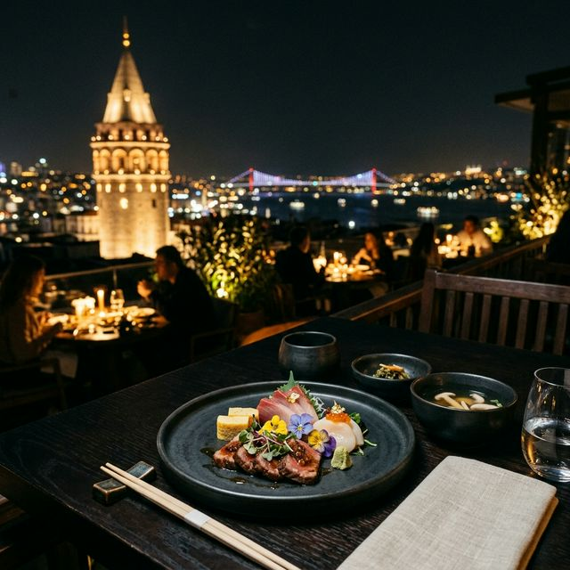
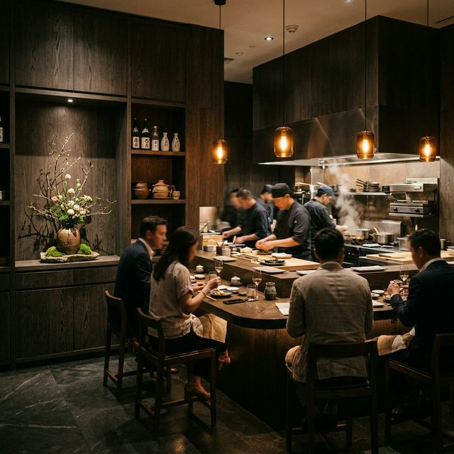
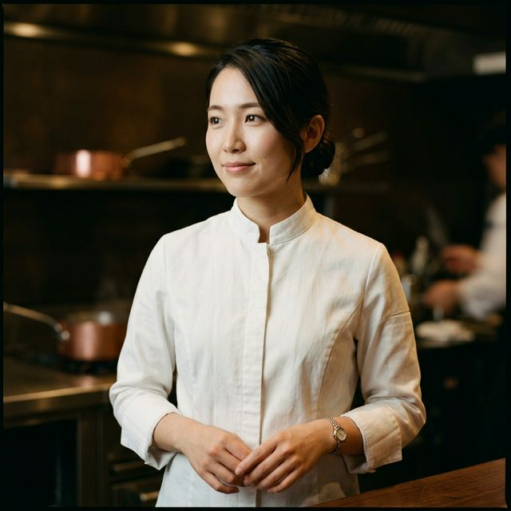
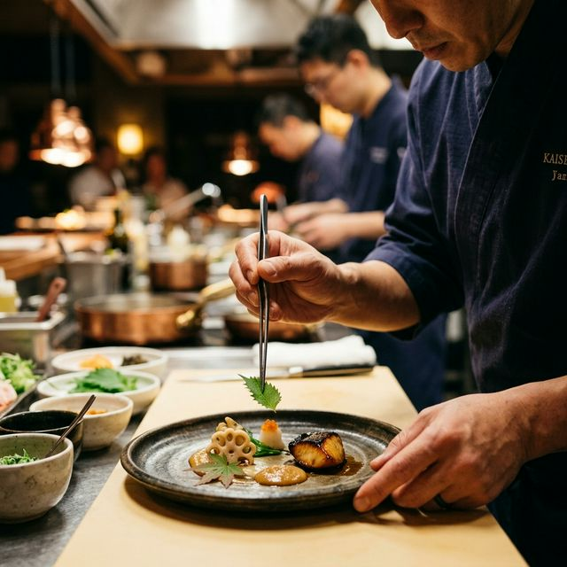
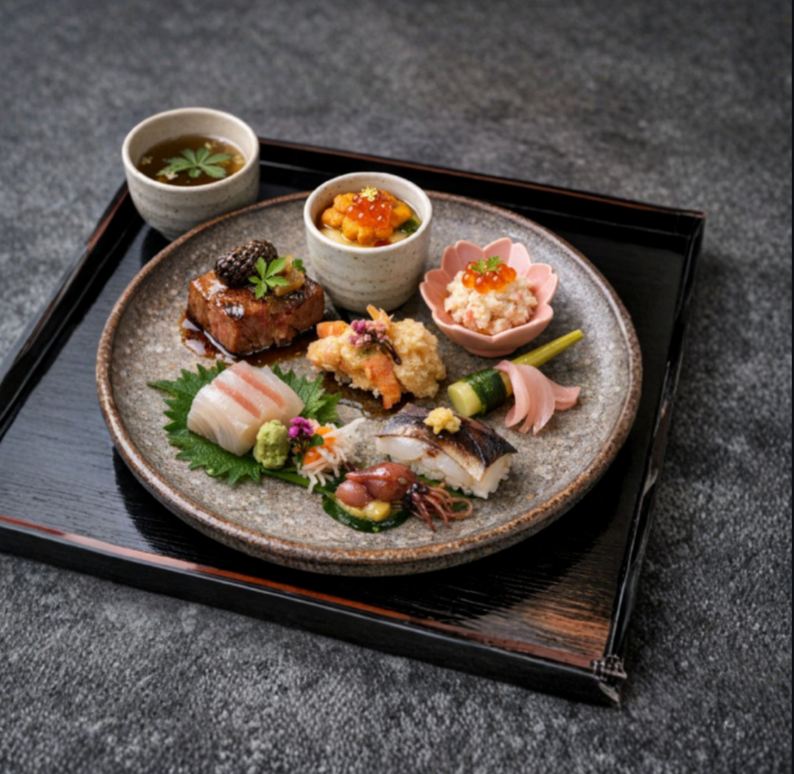
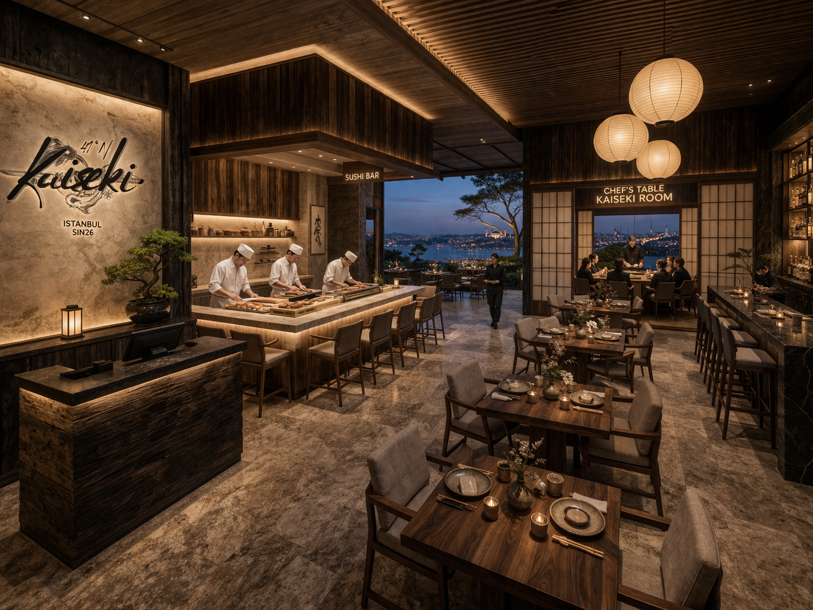

Togi Table
An intimate counter experience for two — direct chef interaction, a personal narrative for each course, an extended 16-course menu with sake pairing included.

A Seasonal Journey of Japanese Precision
and Anatolian Soul
Where the discipline of kaiseki meets the richness of Anatolian terroir. A 14-course narrative set on Istanbul's rooftops, at the crossing point of two continents.
DISCOVER MORE

Kaiseki 41°N is the result of our shared vision of gastronomy — not merely as a food and beverage activity, but as a disciplined artistic practice and a powerful cultural expression.
This project was born from a desire to create a space where the meticulous craft of Japanese kaiseki meets the rich culinary heritage of Anatolia. At the heart of our philosophy lies respect — for ingredients, for seasons, and for the deeply human act of sharing a meal.
The name itself tells our story. "Kaiseki" refers to the ancient Japanese multi-course dining tradition — a practice rooted in seasonality, balance, and simplicity. "41°N" marks the latitude of Istanbul, a city that has always stood at the intersection of East and West, of tradition and reinvention.
Together, they represent our belief: that great cuisine transcends geography. That a single dish can carry centuries of culture, memory, and meaning. And that when prepared with intention and served with grace, food becomes a form of art.
"Where precision meets soul,
and every plate tells a story."

A seasonal tasting menu that unfolds like a narrative — each course a deliberate chapter of craft and contemplation.
Japanese kaiseki philosophy interwoven with the bold, earthy flavors of Anatolian terroir and tradition.
Each course is introduced personally — its origins, its ingredients, the story behind every element on the plate.

Born and raised in Kyoto, Chef Aiko Tanaka trained under some of Japan's most revered kaiseki masters before embarking on a culinary journey across Europe, the Middle East, and Central Asia.
Her cuisine is defined by an unwavering respect for seasonality and a deep curiosity for the ingredients of Anatolia — wild herbs from the Black Sea coast, ancient grains from Cappadocia, and spices traded along the Silk Road for centuries.
At Kaiseki 41°N, Chef Tanaka brings together two worlds with grace and precision, creating dishes that honor both traditions while belonging entirely to neither.

Our menu transforms with each season, guided by the rhythms of nature. Spring blossoms give way to summer's abundance, autumn's earthiness, and winter's quiet depth.
Each meal is a journey of 14 chapters. From the opening amuse-bouche to the final sweet moment, every plate builds upon the last, creating a cohesive sensory arc.
Every element on the plate is intentional. Temperature, texture, color, aroma — all meticulously calibrated to create moments of genuine wonder.

An intimate counter experience for two — direct chef interaction, a personal narrative for each course, an extended 16-course menu with sake pairing included.
Our most exclusive setting — a private room for up to six guests. A bespoke menu designed in advance, with a dedicated sommelier and complete seclusion.




Where the Golden Horn meets the Bosphorus, and Asia greets Europe — an evening above Istanbul's historic skyline.
Tuesday — Sunday
Dinner Service: 18:30 — 23:00
Reservations required
Begin your journey with us.